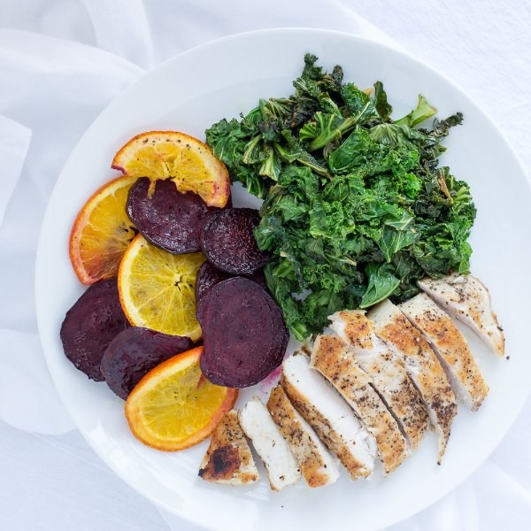

Chicken & Sautéed Kale with Roasted Beet & Orange Slices

Nutrition (per serving)
427.1 kcalCalories
30.3 gProtein
24.9 gCarbs
24 gFat
Full nutrition table
| Calories | 427.1 kcal |
| Total fat | 24 g |
| Saturated fat | 3.6 g |
| Trans fat | 0 g |
| Cholesterol | 82.8 mg |
| Sodium | 151.4 mg |
| Carbohydrates | 24.9 g |
| Fiber | 5.7 g |
| Sugars | 12.6 g |
| Protein | 30.3 g |
| Potassium | 1133.8 mg |
| Calcium | 161.8 mg |
| Iron | 2.7 mg |
| Vitamin A | 218.2 IU |
| Vitamin C | 135.8 mg |
| Vitamin D | 1.1 IU |
Cookware
Ingredients
- 4 mediumbeets
- 1 lbchicken breasts, boneless skinless
- 4 clovesgarlic
- 2 buncheskale
- 2oranges
- black pepper
- extra virgin olive oil
- salt
Steps
- Heat the oven to 500°F.
- Wash and dry the fresh produce.4 medium beets
2 bunches kale
2 oranges - Trim the ends and peel the beets; slice crosswise into ⅛-inch-thick rounds. Transfer to a baking sheet.
- Slice one orange into rounds and add to the beets. Juice the other into a bowl and set aside for later.
- Drizzle the beet and orange slices with olive oil and sprinkle with salt and pepper; toss to coat.2 tbsp extra virgin olive oil
½ tsp salt
¼ tsp black pepper - Place the sheet in the oven and roast until the beet slices are tender, 15 to 20 minutes.
- Fold the kale leaves in half lengthwise and slice off the stems. Roughly chop the leaves and transfer to a medium bowl. Cut the stems into 1-inch pieces and transfer to a separate bowl.
- Peel and mince the garlic; transfer to a small bowl.4 cloves garlic
- Holding a knife parallel to the cutting board, cut the chicken in half horizontally to form thin fillets.1 lb chicken breasts, boneless skinless
- Season the chicken with salt and pepper on both sides.½ tsp salt
½ tsp black pepper - Heat a skillet over medium heat.
- Add olive oil to the skillet and swirl to coat the bottom.2 tbsp extra virgin olive oil
- Place the chicken in the skillet and cook until it is browned and cooked through, 2 to 4 minutes per side. Transfer to a plate.
- Once the chicken has been transferred, add more olive oil to the skillet. Then add the kale stems and season with a little salt; cook until they begin to soften, 3 to 4 minutes.2 tbsp extra virgin olive oil
⅛ tsp salt - Add the garlic to the skillet and stir with the kale stems until fragrant, 15 to 30 seconds.
- Add the kale leaves and pour in the orange juice. Season with more salt and pepper. Stir well and cook until the leaves wilt, 2 to 3 minutes. Remove from the heat.½ tsp salt
¼ tsp black pepper - Divide the chicken, beet and orange slices, and the kale sauté between four plates (or two plates and two lunch containers). Enjoy!